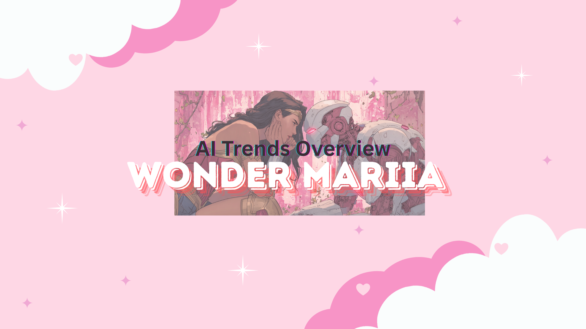

← Back to Portfolio

Wonder Mariia's Vlog – AI Trends Overview
AI Models, Assistants, Agents, Taskers: Know the Difference
Mastering Prompt Engineering: How to Make AI Work for You (Not the Other Way Around)
Most Common AI Agent Use Cases
Atlassian Rovo Chat: How Product Managers Can Boost Productivity with AI
Make.com: Using No Coding Platform to Build Release Notes Voice Assistant